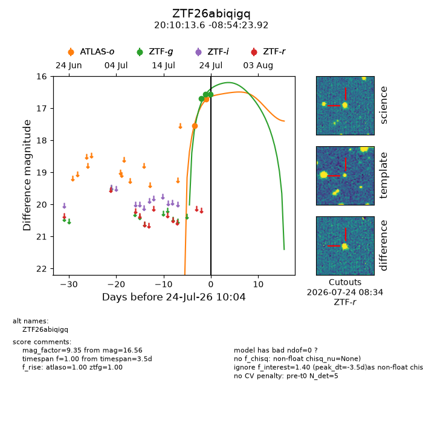
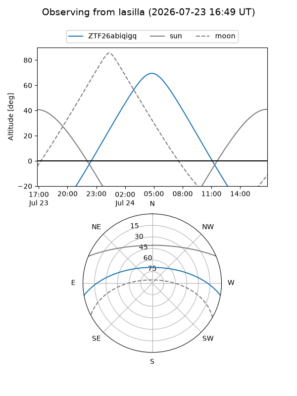
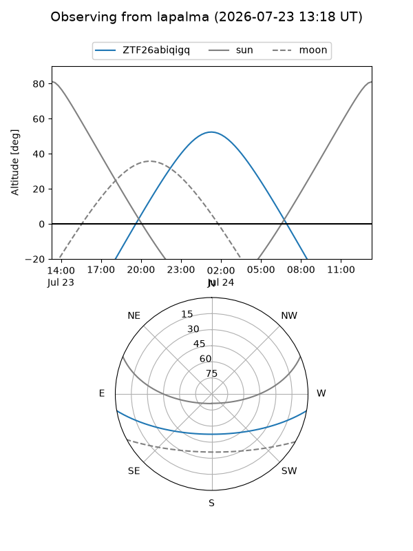
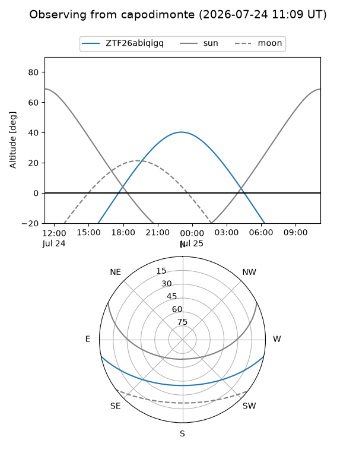
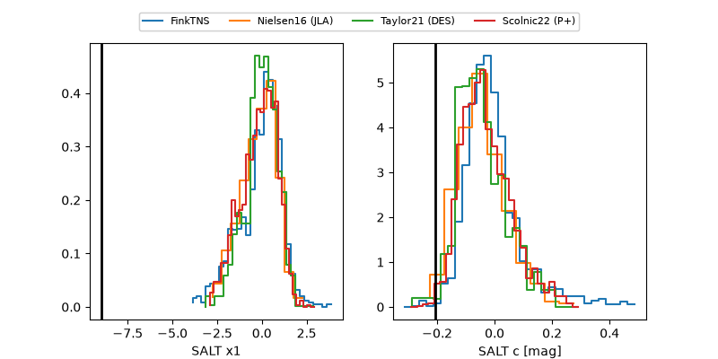

ZTF26abiqigq
Target ZTF26abiqigq at 2026-07-24 10:06
Aliases and brokers:
FINK-ZTF: ztf.fink-portal.org/ZTF26abiqigq
Lasair-ZTF: lasair-ztf.lsst.ac.uk/objects/ZTF26abiqigq
ALeRCE-ZTF: alerce.online/object/ZTF26abiqigq
Direct TNS query: direct search
alt names
ZTF26abiqigq (ztf,fink_ztf)
Coordinates:
equatorial (ra, dec) = 302.5565,-8.90664
equatorial (HMS+DMS) = 20:10:13.55,-08:54:23.92
galactic (l, b) = (33.7968,-21.52747)
Flags:
peak dt: -3.5
Photometry:
last atlaso=16.72, ztfg=16.56
2 atlaso, 3 ztfg detections
Lightcurve

Visibility



Additional plots
